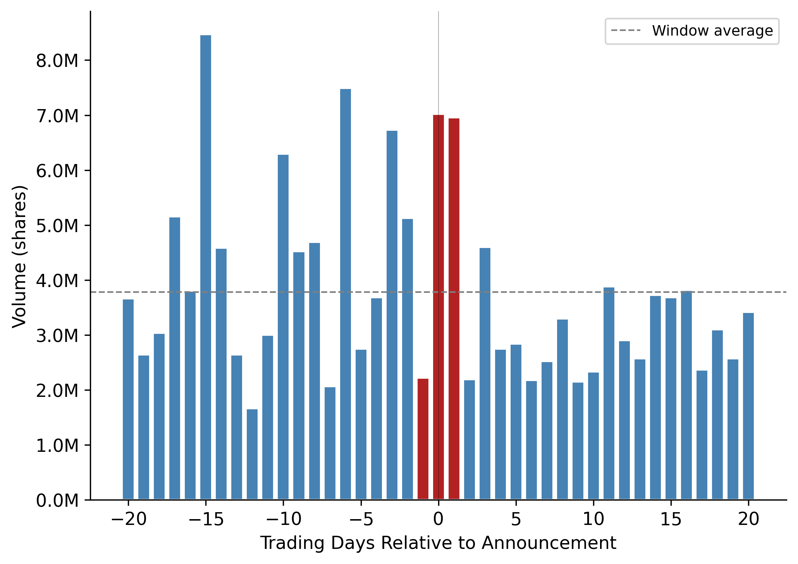
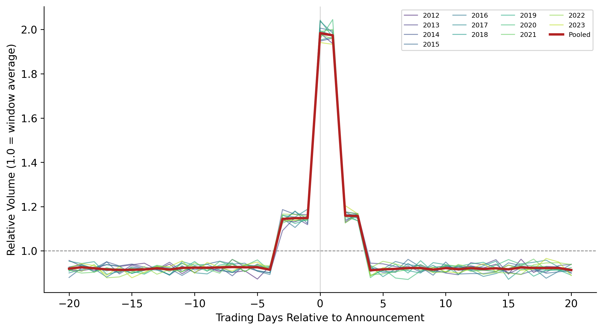
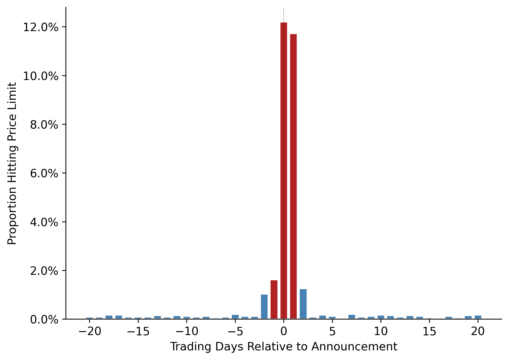

import pandas as pd
import numpy as np
import matplotlib.pyplot as plt
import matplotlib.ticker as mticker
import matplotlib.dates as mdates
import statsmodels.api as sm
import statsmodels.formula.api as smf
from scipy import stats
import warnings
warnings.filterwarnings("ignore")
plt.rcParams.update({
"figure.dpi": 150,
"axes.spines.top": False,
"axes.spines.right": False,
"font.size": 11,
})25 Information Content of Earnings Announcements
A foundational question in capital markets research is whether accounting information matters to investors. If financial statements merely repackage what the market already knows from other sources, such as press coverage, analyst reports, management guidance, macroeconomic data, then the elaborate apparatus of financial reporting is largely redundant for price discovery. Conversely, if earnings announcements trigger measurable changes in trading behavior, we have evidence that the accounting system produces information the market did not previously possess.
Beaver (1968) addressed this question by examining whether trading volume and return volatility increase around the dates when firms announce annual earnings. The logic is direct: if an earnings announcement contains new information, it should alter investors’ beliefs. Altered beliefs lead some investors to trade, increasing volume. And to the extent that the announcement resolves uncertainty, the stock price should adjust, generating abnormal return volatility. Both channels (i.e., volume and volatility) provide distinct windows into the information content of earnings.
The empirical design compares a firm’s trading activity during a narrow announcement window (the days immediately around the earnings release) with its own trading activity during a non-announcement window (otherwise comparable days away from the event). If the announcement conveys information, the announcement window should show elevated volume and volatility relative to the non-announcement period.
25.0.1 Two Distinct Signals: Volume vs. Volatility
While volume and return volatility are both used to measure investor reaction, they capture different economic phenomena. This distinction, formalized in subsequent theoretical work, is important for interpreting results:
Return volatility reflects the average revision in investor beliefs. When the market as a whole is surprised by an earnings number, prices move sharply. The magnitude of the squared (or absolute) return residual measures how far the announcement moved the consensus. This is a measure of the aggregate information content of the announcement (Kim and Verrecchia 1991).
Trading volume reflects disagreement among investors about the implications of the announcement. Even an announcement that moves prices very little can generate heavy trading if investors interpret the same signal differently. For example, if some view an earnings beat as sustainable while others view it as temporary (Kandel and Pearson 1995). Volume thus captures the differential information content of the announcement.
Karpoff (1987) surveys the theoretical and empirical relationship between these two variables. The key insight is that volume is not simply a noisier version of volatility; it provides independent information about how the market processes accounting data.
25.0.2 Why Vietnam?
Vietnam’s equity markets provide a distinctive setting for studying announcement reactions for several reasons:
Information environment. Vietnamese listed firms face less intense pre-announcement scrutiny than their U.S. counterparts. Analyst coverage is sparse (most firms outside the VN30 index receive no institutional coverage). Management earnings guidance is rare. This creates a thicker “information gap” for the earnings announcement to fill, potentially amplifying both volume and volatility reactions.
Retail investor dominance. Over 80% of daily trading volume on HOSE is attributed to retail investors. Retail traders may process earnings information differently from institutions, with greater behavioral biases, less capacity for fundamental analysis, and different trading horizons. This affects both the timing and magnitude of market reactions.
Price limits. HOSE imposes daily price limits of \(\pm\) 7% and HNX of \(\pm\) 10%. When an earnings announcement is sufficiently surprising, the stock may hit its price limit, preventing the market from fully incorporating the information within a single trading session. This creates a distinctive pattern of multi-day adjustment that has no analogue in the original U.S. studies.
Disclosure timing. Vietnamese regulations require audited annual financial statements to be published within 90 days of fiscal year-end. Quarterly financial data (unaudited) must be released within 20 days. The overlap between quarterly and annual announcements, and the variable lag between fiscal year-end and announcement date, creates heterogeneity in the information content of annual earnings releases.
Market structure. Vietnam operates continuous order-matching during trading hours (9:00–11:30 and 13:00–14:30 on HOSE; 9:00–11:30 and 13:00–15:00 on HNX), with periodic call auctions at open and close. This microstructure affects intraday patterns of price discovery around announcements.
25.1 Theoretical Framework
25.1.1 The Information Content Hypothesis
Let \(P_{i,t}\) denote the price of stock \(i\) on date \(t\). Under the efficient markets hypothesis, the price reflects all publicly available information:
\[ P_{i,t} = E\left[\sum_{s=1}^{\infty} \frac{D_{i,t+s}}{(1+r)^s} \;\bigg|\; \Omega_t \right] \tag{25.1}\]
where \(D_{i,t+s}\) represents future dividends, \(r\) is the discount rate, and \(\Omega_t\) is the information set at time \(t\).
When firm \(i\) announces earnings \(X_i\) at time \(\tau\), the information set expands: \(\Omega_{\tau^+} = \Omega_{\tau^-} \cup \{X_i\}\). If the announcement contains new information, meaning \(X_i \notin \Omega_{\tau^-}\), then in general:
\[ P_{i,\tau^+} \neq P_{i,\tau^-} \tag{25.2}\]
The magnitude of the price change reflects the surprise component of the announcement:
\[ |P_{i,\tau^+} - P_{i,\tau^-}| \propto |X_i - E[X_i | \Omega_{\tau^-}]| \tag{25.3}\]
25.1.2 Volume as a Signal of Heterogeneous Beliefs
Kim and Verrecchia (1991) develop a model where trading volume is driven by the precision of investors’ private information relative to the precision of the public signal. Define \(V_{i,\tau}\) as the trading volume for stock \(i\) at time \(\tau\). In their framework:
\[ V_{i,\tau} = f\left(\frac{\text{Var}[X_i | \Omega^{(j)}_{\tau^-}]}{\text{Var}[\varepsilon_i]}\right) \tag{25.4}\]
where \(\Omega^{(j)}_{\tau^-}\) is investor \(j\)’s private information set and \(\varepsilon_i\) is noise. Volume increases when investors disagree about what the announcement means, a condition that Kandel and Pearson (1995) term differential interpretation.
This distinction matters for Vietnam. In a market dominated by retail investors with heterogeneous information and analytical capacity, we might expect the volume reaction to be disproportionately large relative to the price reaction, because disagreement is high even when the aggregate price revision is modest.
25.1.3 Measuring Information Content
We use two complementary measures:
Abnormal return volatility. For each firm-day, compute the squared market-adjusted return:
\[ U^2_{i,t} = (R_{i,t} - R_{m,t})^2 \tag{25.5}\]
where \(R_{i,t}\) is the return on stock \(i\) and \(R_{m,t}\) is the market return. Under the null of no information content, \(E[U^2_{i,t}]\) should be the same in the announcement and non-announcement windows. Beaver (1968) standardized this measure by dividing by the firm’s average \(U^2\) during non-announcement weeks.
Relative volume. For each firm-day, compute:
\[ RV_{i,t} = \frac{Vol_{i,t}}{\overline{Vol}_i} \tag{25.6}\]
where \(\overline{Vol}_i\) is the firm’s average daily volume over the event window. A value of \(RV > 1\) indicates above-average trading. Beaver (1968) used a similar approach, computing a “volume ratio” relative to non-report-period averages.
25.2 Data and Variable Construction
25.2.1 Data Requirements
The analysis requires three data elements:
| Data | Source | Key Fields |
|---|---|---|
| Earnings announcement dates | Financial statements/filings | Ticker, fiscal year-end, announcement date |
| Daily stock returns | Exchange data (HOSE/HNX) | Ticker, date, closing price, return |
| Daily trading volume | Exchange data (HOSE/HNX) | Ticker, date, volume (shares or VND) |
25.2.2 Trading Day Calendar
A critical infrastructure element is a trading day calendar that maps calendar dates to sequential trading day indices. This allows us to count “20 trading days before the announcement” correctly, skipping weekends and holidays.
def build_trading_calendar(
start_date: str = "2008-01-01",
end_date: str = "2024-12-31",
) -> pd.DataFrame:
"""
Build a trading day calendar for Vietnamese stock exchanges.
Vietnamese exchanges trade Monday–Friday, with closures for:
- Tết Nguyên Đán (Lunar New Year, ~5 days)
- Ngày Giỗ Tổ Hùng Vương (Hung Kings' Commemoration)
- Ngày Giải phóng miền Nam (Reunification Day, Apr 30)
- Ngày Quốc tế Lao động (Labour Day, May 1)
- Quốc khánh (National Day, Sep 2)
- Tết Dương lịch (New Year, Jan 1)
For simulation, we approximate by removing weekends and ~10 holidays/year.
"""
all_dates = pd.date_range(start_date, end_date, freq="B") # business days
# Remove approximate Vietnamese public holidays
# (In practice, use the exact holiday calendar from SSC/HOSE)
rng = np.random.default_rng(42)
n_holidays_per_year = 10
years = all_dates.year.unique()
holidays = []
for yr in years:
yr_dates = all_dates[all_dates.year == yr]
if len(yr_dates) > n_holidays_per_year:
idx = rng.choice(len(yr_dates), n_holidays_per_year, replace=False)
holidays.extend(yr_dates[idx])
trading_dates = all_dates.difference(pd.DatetimeIndex(holidays))
cal = pd.DataFrame({
"date": trading_dates,
"td": np.arange(1, len(trading_dates) + 1),
})
return cal
trading_cal = build_trading_calendar()
print(f"Trading calendar: {len(trading_cal):,} trading days, "
f"{trading_cal['date'].min().date()} to {trading_cal['date'].max().date()}")Trading calendar: 4,266 trading days, 2008-01-01 to 2024-12-3125.2.3 Announcement Date Alignment
Earnings announcements may occur on non-trading days (weekends, holidays). When this happens, we assign the announcement to the next available trading day, since that is the first opportunity for the market to react. We also need to handle the case where announcements occur after market close. Ideally, these would be assigned to the following trading day. Without intraday timing data (common in Vietnamese disclosures), we use the announcement date as reported.
def build_announcement_mapper(trading_cal: pd.DataFrame) -> pd.DataFrame:
"""
Create a mapping from every calendar date to the next available
trading day index. This handles announcements on weekends/holidays.
"""
min_date = trading_cal["date"].min()
max_date = trading_cal["date"].max()
all_dates = pd.date_range(min_date, max_date, freq="D")
mapper = pd.DataFrame({"annc_date": all_dates})
mapper = mapper.merge(
trading_cal.rename(columns={"date": "annc_date"}),
on="annc_date",
how="left",
)
# Forward-fill: assign non-trading dates to next trading day
mapper["td"] = mapper["td"].bfill()
mapper["td"] = mapper["td"].astype("Int64")
return mapper
annc_mapper = build_announcement_mapper(trading_cal)25.2.4 Generating Synthetic Vietnamese Data
We generate a synthetic panel of Vietnamese listed firms with realistic properties to demonstrate the methodology. The simulation embeds an earnings announcement effect—elevated volume and volatility on days 0 and +1, that we then seek to detect using the Beaver (1968) framework.
def generate_beaver_data(
n_firms: int = 300,
years: list[int] = None,
seed: int = 2024,
days_window: int = 20,
) -> tuple[pd.DataFrame, pd.DataFrame]:
"""
Generate:
1. earn_annc: DataFrame of earnings announcement dates
2. daily_data: DataFrame of daily returns and volume
The DGP embeds:
- An announcement-day return volatility spike (2-3x normal)
- An announcement-day volume spike (1.5-2.5x normal)
- Price limit truncation at ±7% (HOSE)
- Cross-sectional variation by firm size and exchange
"""
if years is None:
years = list(range(2012, 2024))
rng = np.random.default_rng(seed)
tc = build_trading_calendar()
am = build_announcement_mapper(tc)
exchanges = ["HOSE", "HNX"]
price_limits = {"HOSE": 0.07, "HNX": 0.10}
# ── Generate announcement dates ──
annc_records = []
for i in range(n_firms):
ticker = f"VN{i:04d}"
exchange = rng.choice(exchanges, p=[0.6, 0.4])
# Firm size (log market cap in VND billions)
log_mcap = rng.normal(6.5, 1.5)
for yr in years:
# Fiscal year ends Dec 31; announcement 60-90 days later
fy_end = pd.Timestamp(f"{yr}-12-31")
annc_lag = rng.integers(45, 90)
annc_date = fy_end + pd.Timedelta(days=int(annc_lag))
annc_records.append({
"ticker": ticker,
"fiscal_year": yr,
"datadate": fy_end,
"annc_date": annc_date,
"exchange": exchange,
"log_mcap": log_mcap,
})
earn_annc = pd.DataFrame(annc_records)
# Map to trading day index
earn_annc["annc_date_dt"] = pd.to_datetime(earn_annc["annc_date"])
earn_annc = earn_annc.merge(
am[["annc_date", "td"]].rename(columns={"td": "event_td"}),
left_on="annc_date_dt",
right_on="annc_date",
how="left",
suffixes=("", "_map"),
)
earn_annc = earn_annc.dropna(subset=["event_td"])
earn_annc["event_td"] = earn_annc["event_td"].astype(int)
earn_annc["start_td"] = earn_annc["event_td"] - days_window
earn_annc["end_td"] = earn_annc["event_td"] + days_window
# Map start/end td back to dates
td_to_date = tc.set_index("td")["date"]
earn_annc["start_date"] = earn_annc["start_td"].map(td_to_date)
earn_annc["end_date"] = earn_annc["end_td"].map(td_to_date)
earn_annc = earn_annc.dropna(subset=["start_date", "end_date"])
# ── Generate daily return and volume data ──
daily_records = []
for _, row in earn_annc.iterrows():
ticker = row["ticker"]
exchange = row["exchange"]
plimit = price_limits[exchange]
log_mcap = row["log_mcap"]
event_td = row["event_td"]
# Base volatility inversely related to size
base_vol = 0.015 + 0.01 * np.exp(-0.3 * log_mcap)
# Base volume (shares/day)
base_volume = np.exp(log_mcap + rng.normal(0, 0.5)) * 1000
# Window trading days
window_tds = tc[
(tc["td"] >= row["start_td"]) & (tc["td"] <= row["end_td"])
].copy()
for _, td_row in window_tds.iterrows():
date = td_row["date"]
td = td_row["td"]
relative_td = td - event_td
# Market return (common factor)
mkt_ret = rng.normal(0.0003, 0.012)
# Firm-specific return
# Announcement effect: elevated volatility on days 0, +1
if relative_td in [0, 1]:
vol_mult = rng.uniform(2.0, 3.5)
elif abs(relative_td) <= 2:
vol_mult = rng.uniform(1.2, 1.8)
else:
vol_mult = 1.0
firm_shock = rng.normal(0, base_vol * vol_mult)
raw_ret = mkt_ret + firm_shock
# Apply price limits
ret = np.clip(raw_ret, -plimit, plimit)
ret_mkt = ret - mkt_ret
# Volume: spike on announcement days
if relative_td in [0, 1]:
vol_spike = rng.uniform(1.5, 2.8)
elif abs(relative_td) <= 3:
vol_spike = rng.uniform(1.0, 1.5)
else:
vol_spike = rng.uniform(0.7, 1.3)
volume = base_volume * vol_spike * np.exp(rng.normal(0, 0.3))
daily_records.append({
"ticker": ticker,
"fiscal_year": row["fiscal_year"],
"date": date,
"td": td,
"relative_td": relative_td,
"ret": ret,
"mkt_ret": mkt_ret,
"ret_mkt": ret_mkt,
"vol": max(volume, 100),
"exchange": exchange,
"log_mcap": log_mcap,
})
daily_data = pd.DataFrame(daily_records)
return earn_annc, daily_data
earn_annc, daily_data = generate_beaver_data(n_firms=300, seed=2024)
print(f"Announcements: {len(earn_annc):,}")
print(f"Daily observations: {len(daily_data):,}")Announcements: 3,600
Daily observations: 147,60025.3 Single-Event Walkthrough
Before scaling to the full sample, we trace the methodology for a single earnings announcement to build intuition and verify each step.
25.3.1 Selecting the Event
single_ticker = "VN0042"
single_fy = 2019
single_event = earn_annc[
(earn_annc["ticker"] == single_ticker) &
(earn_annc["fiscal_year"] == single_fy)
].iloc[0]
print(f"Firm: {single_event['ticker']}")
print(f"Fiscal year-end: {single_event['datadate'].date()}")
print(f"Announcement date: {single_event['annc_date'].date()}")
print(f"Exchange: {single_event['exchange']}")
print(f"Event trading day: {single_event['event_td']}")Firm: VN0042
Fiscal year-end: 2019-12-31
Announcement date: 2020-03-28
Exchange: HOSE
Event trading day: 307325.3.2 Event Window Data
We extract 41 trading days of data (20 before through 20 after the announcement) and compute the key measures.
single_daily = daily_data[
(daily_data["ticker"] == single_ticker) &
(daily_data["fiscal_year"] == single_fy)
].copy()
# Compute measures
single_daily["sq_ret_mkt"] = single_daily["ret_mkt"] ** 2
single_daily["abs_ret_mkt"] = single_daily["ret_mkt"].abs()
# Relative volume: normalize by own average
avg_vol = single_daily["vol"].mean()
single_daily["rel_vol"] = single_daily["vol"] / avg_vol
print(f"Trading days in window: {len(single_daily)}")
print(f"Average daily volume: {avg_vol:,.0f} shares")Trading days in window: 41
Average daily volume: 3,780,757 shares25.3.3 Visualizing the Single Event
Figure 25.1 and Figure 25.2 display the volume and volatility patterns for this single earnings announcement.
fig, ax = plt.subplots()
colors = ["firebrick" if abs(t) <= 1 else "steelblue"
for t in single_daily["relative_td"]]
ax.bar(single_daily["relative_td"], single_daily["vol"],
color=colors, edgecolor="white", width=0.8)
ax.axhline(avg_vol, color="grey", linestyle="--", linewidth=1,
label="Window average")
ax.axvline(0, color="black", linewidth=0.5, alpha=0.3)
ax.set_xlabel("Trading Days Relative to Announcement")
ax.set_ylabel("Volume (shares)")
ax.yaxis.set_major_formatter(mticker.FuncFormatter(lambda x, _: f"{x/1e6:.1f}M"))
ax.legend(fontsize=9)
plt.tight_layout()
plt.show()

fig, ax = plt.subplots()
ax.bar(single_daily["relative_td"], single_daily["sq_ret_mkt"],
color=["firebrick" if abs(t) <= 1 else "steelblue"
for t in single_daily["relative_td"]],
edgecolor="white", width=0.8)
ax.axhline(single_daily["sq_ret_mkt"].mean(), color="grey",
linestyle="--", linewidth=1, label="Window average")
ax.axvline(0, color="black", linewidth=0.5, alpha=0.3)
ax.set_xlabel("Trading Days Relative to Announcement")
ax.set_ylabel("Squared Market-Adjusted Return")
ax.legend(fontsize=9)
plt.tight_layout()
plt.show()
TipReading the Plots
A single event is inherently noisy, other firm-specific news (M&A rumors, analyst reports, regulatory actions) can generate volume and volatility spikes on non-announcement dates. The value of the Beaver (1968) approach lies in averaging across many events to isolate the systematic announcement effect from idiosyncratic noise.
25.4 Full-Sample Analysis
25.4.1 Computing Event-Time Aggregates
For each event day \(\tau\) relative to the announcement, we compute the cross-sectional average of our two measures across all announcements:
\[ \overline{U^2}_\tau = \frac{1}{N_\tau} \sum_{i=1}^{N_\tau} U^2_{i,\tau} \tag{25.7}\]
\[ \overline{RV}_\tau = \frac{1}{N_\tau} \sum_{i=1}^{N_\tau} RV_{i,\tau} \tag{25.8}\]
where \(N_\tau\) is the number of announcements with available data on event day \(\tau\).
# Squared and absolute market-adjusted returns
daily_data["sq_ret_mkt"] = daily_data["ret_mkt"] ** 2
daily_data["abs_ret_mkt"] = daily_data["ret_mkt"].abs()
# Relative volume: normalize within each event window
daily_data["rel_vol"] = (
daily_data
.groupby(["ticker", "fiscal_year"])["vol"]
.transform(lambda x: x / x.mean())
)
# Standardized squared return: normalize within each event window
daily_data["std_sq_ret"] = (
daily_data
.groupby(["ticker", "fiscal_year"])["sq_ret_mkt"]
.transform(lambda x: x / x.mean())
)
# Add fiscal year for panel breakdowns
daily_data["year"] = daily_data["fiscal_year"]event_summary = (
daily_data
.groupby(["relative_td", "year"])
.agg(
n_obs=("ret", "size"),
mean_ret=("ret", "mean"),
mean_ret_mkt=("ret_mkt", "mean"),
sd_ret_mkt=("ret_mkt", "std"),
mean_sq_ret=("sq_ret_mkt", "mean"),
mean_abs_ret=("abs_ret_mkt", "mean"),
mean_rel_vol=("rel_vol", "mean"),
mean_std_sq_ret=("std_sq_ret", "mean"),
median_rel_vol=("rel_vol", "median"),
)
.reset_index()
)
# Also compute pooled (all-year) summary
event_summary_pooled = (
daily_data
.groupby("relative_td")
.agg(
n_obs=("ret", "size"),
mean_ret=("ret", "mean"),
mean_ret_mkt=("ret_mkt", "mean"),
sd_ret_mkt=("ret_mkt", "std"),
mean_sq_ret=("sq_ret_mkt", "mean"),
mean_abs_ret=("abs_ret_mkt", "mean"),
mean_rel_vol=("rel_vol", "mean"),
mean_std_sq_ret=("std_sq_ret", "mean"),
median_rel_vol=("rel_vol", "median"),
)
.reset_index()
)25.4.2 Return Volatility Around Announcements
Figure 25.3 plots the standard deviation of market-adjusted returns by event day, separately for each fiscal year. A clear spike on days 0 and +1 is the hallmark of information content.
fig, ax = plt.subplots(figsize=(9, 5))
years_plot = sorted(event_summary["year"].unique())
# Use a colormap
cmap = plt.cm.viridis(np.linspace(0.1, 0.9, len(years_plot)))
for idx, yr in enumerate(years_plot):
sub = event_summary[event_summary["year"] == yr].sort_values("relative_td")
ax.plot(sub["relative_td"], sub["sd_ret_mkt"],
color=cmap[idx], alpha=0.6, linewidth=1.0, label=str(yr))
# Overlay pooled mean
pooled = event_summary_pooled.sort_values("relative_td")
ax.plot(pooled["relative_td"], pooled["sd_ret_mkt"],
color="firebrick", linewidth=2.5, linestyle="-", label="Pooled",
zorder=10)
ax.axvline(0, color="black", linewidth=0.5, alpha=0.3)
ax.set_xlabel("Trading Days Relative to Announcement")
ax.set_ylabel("Std Dev of Market-Adjusted Returns")
ax.legend(fontsize=7, ncol=4, loc="upper right")
plt.tight_layout()
plt.show()
25.4.3 Trading Volume Around Announcements
Figure 25.4 shows relative trading volume by event day. The volume response provides an independent confirmation of the volatility finding.
fig, ax = plt.subplots(figsize=(9, 5))
for idx, yr in enumerate(years_plot):
sub = event_summary[event_summary["year"] == yr].sort_values("relative_td")
ax.plot(sub["relative_td"], sub["mean_rel_vol"],
color=cmap[idx], alpha=0.6, linewidth=1.0, label=str(yr))
ax.plot(pooled["relative_td"], pooled["mean_rel_vol"],
color="firebrick", linewidth=2.5, linestyle="-", label="Pooled",
zorder=10)
ax.axhline(1.0, color="grey", linestyle="--", linewidth=0.8)
ax.axvline(0, color="black", linewidth=0.5, alpha=0.3)
ax.set_xlabel("Trading Days Relative to Announcement")
ax.set_ylabel("Relative Volume (1.0 = window average)")
ax.legend(fontsize=7, ncol=4, loc="upper right")
plt.tight_layout()
plt.show()

25.4.4 Formal Statistical Tests
Beaver (1968) relied on visual inspection and informal statistical arguments. Modern practice demands formal tests. We test whether the announcement-window measures differ significantly from the non-announcement window using a paired comparison.
Define the announcement window as days \(\{-1, 0, +1\}\) and the non-announcement window as days \(\{-20, \ldots, -5\} \cup \{+5, \ldots, +20\}\). For each event \(i\), we compute:
\[ \Delta U^2_i = \overline{U^2}_{i,\text{annc}} - \overline{U^2}_{i,\text{non-annc}} \tag{25.9}\]
Under the null, \(E[\Delta U^2_i] = 0\). We test this with a \(t\)-test across events.
annc_window = [-1, 0, 1]
non_annc_window = list(range(-20, -4)) + list(range(5, 21))
def compute_window_means(df, var, window):
"""Compute mean of var within a window for each event."""
return (
df[df["relative_td"].isin(window)]
.groupby(["ticker", "fiscal_year"])[var]
.mean()
)
test_results = {}
for var, label in [("sq_ret_mkt", "Squared Mkt-Adj Return"),
("abs_ret_mkt", "Absolute Mkt-Adj Return"),
("rel_vol", "Relative Volume")]:
annc_mean = compute_window_means(daily_data, var, annc_window)
non_annc_mean = compute_window_means(daily_data, var, non_annc_window)
# Align on common events
common = annc_mean.index.intersection(non_annc_mean.index)
diff = annc_mean.loc[common] - non_annc_mean.loc[common]
diff = diff.dropna()
t_stat, p_val = stats.ttest_1samp(diff, 0)
test_results[label] = {
"Annc Window Mean": annc_mean.mean(),
"Non-Annc Window Mean": non_annc_mean.mean(),
"Difference": diff.mean(),
"t-statistic": t_stat,
"p-value": p_val,
"N events": len(diff),
}
test_df = pd.DataFrame(test_results).T.round(4)
test_df["N events"] = test_df["N events"].astype(int)
test_df| Annc Window Mean | Non-Annc Window Mean | Difference | t-statistic | p-value | N events | |
|---|---|---|---|---|---|---|
| Squared Mkt-Adj Return | 0.0014 | 0.0003 | 0.0011 | 64.1353 | 0.0 | 3600 |
| Absolute Mkt-Adj Return | 0.0294 | 0.0132 | 0.0162 | 79.7318 | 0.0 | 3600 |
| Relative Volume | 1.7020 | 0.9206 | 0.7814 | 135.9351 | 0.0 | 3600 |
25.4.5 Standardized Volatility Ratio
Following the approach of Beaver (1968), we compute the ratio of announcement-window squared returns to non-announcement-window squared returns. Under the null, this ratio equals 1.0.
fig, ax = plt.subplots()
ratio = pooled["mean_std_sq_ret"]
colors = ["firebrick" if abs(t) <= 1 else "steelblue"
for t in pooled["relative_td"]]
ax.bar(pooled["relative_td"], ratio, color=colors, edgecolor="white")
ax.axhline(1.0, color="grey", linestyle="--", linewidth=1, label="Expected under null")
ax.axvline(0, color="black", linewidth=0.5, alpha=0.3)
ax.set_xlabel("Trading Days Relative to Announcement")
ax.set_ylabel("Standardized Squared Return (ratio)")
ax.legend()
plt.tight_layout()
plt.show()
25.5 Cross-Sectional Variation
A uniform announcement effect across all firms would be surprising. Theory predicts that the magnitude of the market reaction depends on the pre-announcement information environment: firms with richer information sets prior to the announcement should exhibit smaller reactions because less of the earnings number is news (Atiase 1985; Verrecchia 2001).
25.5.1 By Firm Size
Larger firms receive more attention from analysts, media, and institutional investors, so their earnings announcements should contain less incremental information.
# Assign size terciles
daily_data["size_tercile"] = pd.qcut(
daily_data["log_mcap"], 3, labels=["Small", "Medium", "Large"]
)
size_summary = (
daily_data
.groupby(["relative_td", "size_tercile"])
.agg(
mean_std_sq_ret=("std_sq_ret", "mean"),
mean_rel_vol=("rel_vol", "mean"),
)
.reset_index()
)
fig, axes = plt.subplots(1, 2, figsize=(12, 5))
size_colors = {"Small": "#E91E63", "Medium": "#FF9800", "Large": "#2196F3"}
for label, color in size_colors.items():
sub = size_summary[size_summary["size_tercile"] == label].sort_values("relative_td")
axes[0].plot(sub["relative_td"], sub["mean_std_sq_ret"],
label=label, color=color, linewidth=1.5)
axes[1].plot(sub["relative_td"], sub["mean_rel_vol"],
label=label, color=color, linewidth=1.5)
for ax in axes:
ax.axvline(0, color="black", linewidth=0.5, alpha=0.3)
ax.set_xlabel("Trading Days Relative to Announcement")
ax.legend()
axes[0].axhline(1.0, color="grey", linestyle="--", linewidth=0.7)
axes[0].set_ylabel("Standardized Squared Return")
axes[0].set_title("Volatility Reaction by Size")
axes[1].axhline(1.0, color="grey", linestyle="--", linewidth=0.7)
axes[1].set_ylabel("Relative Volume")
axes[1].set_title("Volume Reaction by Size")
plt.tight_layout()
plt.show()
25.5.2 By Exchange (HOSE vs. HNX)
HOSE-listed firms are generally larger and more liquid than HNX-listed firms. Additionally, the tighter price limits on HOSE (\(\pm\) 7% vs. \(\pm\) 10% on HNX) may truncate announcement-day returns, compressing measured volatility and potentially spreading the adjustment over multiple days.
exch_summary = (
daily_data
.groupby(["relative_td", "exchange"])
.agg(
mean_std_sq_ret=("std_sq_ret", "mean"),
mean_rel_vol=("rel_vol", "mean"),
)
.reset_index()
)
fig, axes = plt.subplots(1, 2, figsize=(12, 5))
exch_colors = {"HOSE": "#1565C0", "HNX": "#E65100"}
for exch, color in exch_colors.items():
sub = exch_summary[exch_summary["exchange"] == exch].sort_values("relative_td")
axes[0].plot(sub["relative_td"], sub["mean_std_sq_ret"],
label=exch, color=color, linewidth=1.5)
axes[1].plot(sub["relative_td"], sub["mean_rel_vol"],
label=exch, color=color, linewidth=1.5)
for ax in axes:
ax.axvline(0, color="black", linewidth=0.5, alpha=0.3)
ax.legend()
ax.set_xlabel("Trading Days Relative to Announcement")
axes[0].axhline(1.0, color="grey", linestyle="--", linewidth=0.7)
axes[0].set_ylabel("Standardized Squared Return")
axes[0].set_title("Volatility by Exchange")
axes[1].axhline(1.0, color="grey", linestyle="--", linewidth=0.7)
axes[1].set_ylabel("Relative Volume")
axes[1].set_title("Volume by Exchange")
plt.tight_layout()
plt.show()
25.5.3 Regression Analysis
We formalize the cross-sectional analysis with an event-level regression:
\[ \Delta U^2_i = \beta_0 + \beta_1 \text{Size}_i + \beta_2 \text{HNX}_i + \beta_3 \text{AnnLag}_i + \varepsilon_i \tag{25.10}\]
where \(\text{Size}_i\) is log market capitalization, \(\text{HNX}_i\) is an indicator for HNX listing, and \(\text{AnnLag}_i\) is the number of calendar days between fiscal year-end and the announcement date (longer lags may allow more information leakage, reducing the surprise).
# Build event-level dataset
annc_data = daily_data[daily_data["relative_td"].isin(annc_window)].copy()
non_annc_data = daily_data[daily_data["relative_td"].isin(non_annc_window)].copy()
annc_means = (
annc_data
.groupby(["ticker", "fiscal_year"])
.agg(annc_sq_ret=("sq_ret_mkt", "mean"), annc_vol=("rel_vol", "mean"))
.reset_index()
)
non_annc_means = (
non_annc_data
.groupby(["ticker", "fiscal_year"])
.agg(non_annc_sq_ret=("sq_ret_mkt", "mean"), non_annc_vol=("rel_vol", "mean"))
.reset_index()
)
event_df = annc_means.merge(non_annc_means, on=["ticker", "fiscal_year"])
event_df["delta_sq_ret"] = event_df["annc_sq_ret"] - event_df["non_annc_sq_ret"]
event_df["delta_vol"] = event_df["annc_vol"] - event_df["non_annc_vol"]
# Add firm characteristics
firm_chars = (
earn_annc[["ticker", "fiscal_year", "exchange", "log_mcap", "datadate", "annc_date"]]
.drop_duplicates(["ticker", "fiscal_year"])
)
firm_chars["hnx"] = (firm_chars["exchange"] == "HNX").astype(int)
firm_chars["annc_lag"] = (
pd.to_datetime(firm_chars["annc_date"]) - pd.to_datetime(firm_chars["datadate"])
).dt.days
event_df = event_df.merge(firm_chars, on=["ticker", "fiscal_year"], how="left")
event_df = event_df.dropna(subset=["log_mcap", "hnx", "annc_lag", "delta_sq_ret"])
# Regression
mod_vol = smf.ols("delta_sq_ret ~ log_mcap + hnx + annc_lag", data=event_df).fit()
mod_volume = smf.ols("delta_vol ~ log_mcap + hnx + annc_lag", data=event_df).fit()
reg_table = pd.DataFrame({
"Volatility": {
"Intercept": f"{mod_vol.params['Intercept']:.6f} ({mod_vol.bse['Intercept']:.6f})",
"Size (log mcap)": f"{mod_vol.params['log_mcap']:.6f} ({mod_vol.bse['log_mcap']:.6f})",
"HNX": f"{mod_vol.params['hnx']:.6f} ({mod_vol.bse['hnx']:.6f})",
"Annc Lag (days)": f"{mod_vol.params['annc_lag']:.6f} ({mod_vol.bse['annc_lag']:.6f})",
"N": f"{int(mod_vol.nobs):,}",
"R²": f"{mod_vol.rsquared:.4f}",
},
"Volume": {
"Intercept": f"{mod_volume.params['Intercept']:.4f} ({mod_volume.bse['Intercept']:.4f})",
"Size (log mcap)": f"{mod_volume.params['log_mcap']:.4f} ({mod_volume.bse['log_mcap']:.4f})",
"HNX": f"{mod_volume.params['hnx']:.4f} ({mod_volume.bse['hnx']:.4f})",
"Annc Lag (days)": f"{mod_volume.params['annc_lag']:.6f} ({mod_volume.bse['annc_lag']:.6f})",
"N": f"{int(mod_volume.nobs):,}",
"R²": f"{mod_volume.rsquared:.4f}",
},
})
reg_table| Volatility | Volume | |
|---|---|---|
| Intercept | 0.001040 (0.000116) | 0.7676 (0.0396) |
| Size (log mcap) | -0.000039 (0.000011) | 0.0017 (0.0038) |
| HNX | 0.000266 (0.000034) | 0.0118 (0.0117) |
| Annc Lag (days) | 0.000003 (0.000001) | -0.000037 (0.000444) |
| N | 3,600 | 3,600 |
| R² | 0.0210 | 0.0003 |
25.6 Discussion and Contemporary Perspectives
25.6.1 The Bamber et al. (2000) Critique
Bamber, Christensen, and Gaver (2000) raised two important methodological concerns about the original Beaver (1968) findings:
Mean vs. median effects. The original study focused on mean volume and volatility, which can be driven by a small number of extreme events. When Bamber, Christensen, and Gaver (2000) examined the proportion of individual announcements that generate unusual reactions (rather than the mean reaction), the evidence was far less dramatic.
Sample selection. Beaver’s original sample of 143 firms was not randomly drawn but reflected specific selection criteria that may have biased toward firms with more informative announcements.
We can assess the first concern directly. Figure 25.8 plots the fraction of announcements with above-median volatility or volume on each event day, following the spirit of Bamber et al.’s critique.
# For each event, determine if announcement-day measures exceed
# that event's median non-announcement-day measures
event_medians = (
daily_data[daily_data["relative_td"].isin(non_annc_window)]
.groupby(["ticker", "fiscal_year"])
.agg(median_sq_ret=("sq_ret_mkt", "median"), median_vol=("rel_vol", "median"))
.reset_index()
)
daily_with_median = daily_data.merge(
event_medians, on=["ticker", "fiscal_year"], how="left"
)
daily_with_median["above_med_vol"] = (
daily_with_median["sq_ret_mkt"] > daily_with_median["median_sq_ret"]
).astype(int)
daily_with_median["above_med_volume"] = (
daily_with_median["rel_vol"] > daily_with_median["median_vol"]
).astype(int)
prop_summary = (
daily_with_median
.groupby("relative_td")
.agg(
prop_above_vol=("above_med_vol", "mean"),
prop_above_volume=("above_med_volume", "mean"),
)
.reset_index()
.sort_values("relative_td")
)
fig, axes = plt.subplots(1, 2, figsize=(12, 5))
axes[0].bar(prop_summary["relative_td"], prop_summary["prop_above_vol"],
color="steelblue", edgecolor="white")
axes[0].axhline(0.5, color="grey", linestyle="--", linewidth=1)
axes[0].axvline(0, color="black", linewidth=0.5, alpha=0.3)
axes[0].set_xlabel("Trading Days Relative to Announcement")
axes[0].set_ylabel("Proportion > Median")
axes[0].set_title("Proportion with Above-Median Volatility")
axes[0].yaxis.set_major_formatter(mticker.PercentFormatter(xmax=1))
axes[1].bar(prop_summary["relative_td"], prop_summary["prop_above_volume"],
color="darkorange", edgecolor="white")
axes[1].axhline(0.5, color="grey", linestyle="--", linewidth=1)
axes[1].axvline(0, color="black", linewidth=0.5, alpha=0.3)
axes[1].set_xlabel("Trading Days Relative to Announcement")
axes[1].set_ylabel("Proportion > Median")
axes[1].set_title("Proportion with Above-Median Volume")
axes[1].yaxis.set_major_formatter(mticker.PercentFormatter(xmax=1))
plt.tight_layout()
plt.show()
25.6.2 How Much Information Do Earnings Announcements Convey?
Ball and Shivakumar (2008) pose a provocative question: even if earnings announcements generate detectable market reactions, how much of the total annual information flow do they account for? Their analysis suggests that quarterly earnings announcements explain only about 12–18% of annual return variation for U.S. firms, implying that the vast majority of value-relevant information reaches the market through other channels.
We can compute an analogous statistic for our Vietnamese sample:
# Compute fraction of event-window variance in announcement days
variance_shares = []
for (ticker, fy), group in daily_data.groupby(["ticker", "fiscal_year"]):
total_var = group["ret_mkt"].var()
annc_var = group[group["relative_td"].isin(annc_window)]["ret_mkt"].var()
if total_var > 0 and not np.isnan(annc_var):
variance_shares.append({
"ticker": ticker,
"fiscal_year": fy,
"annc_var_share": annc_var / total_var,
})
var_share_df = pd.DataFrame(variance_shares)
expected_share = len(annc_window) / 41 # 3 days out of 41
share_stats = pd.DataFrame({
"Statistic": ["Mean share", "Median share", "Expected under null",
"N events", "% above expected"],
"Value": [
f"{var_share_df['annc_var_share'].mean():.3f}",
f"{var_share_df['annc_var_share'].median():.3f}",
f"{expected_share:.3f}",
f"{len(var_share_df):,}",
f"{(var_share_df['annc_var_share'] > expected_share).mean():.1%}",
],
}).set_index("Statistic")
share_stats25.6.3 Price Limits and Multi-Day Adjustment
A distinctive feature of Vietnamese markets is that daily price limits can prevent full single-day price adjustment. When an announcement is sufficiently surprising, the stock may hit the \(\pm\) 7% limit on HOSE (or \(\pm\) 10% on HNX), and the remaining adjustment spills into subsequent trading days. This creates a pattern of limit hits followed by continued drift, a phenomenon that would bias downward any single-day measure of announcement impact and redistribute information content across days 0, +1, and potentially +2.
# Identify limit hits
def is_limit_hit(row):
limit = 0.07 if row["exchange"] == "HOSE" else 0.10
return abs(row["ret"]) >= (limit - 0.005)
daily_data["limit_hit"] = daily_data.apply(is_limit_hit, axis=1).astype(int)
limit_summary = (
daily_data
.groupby("relative_td")["limit_hit"]
.mean()
.reset_index()
.sort_values("relative_td")
)
fig, ax = plt.subplots()
colors = ["firebrick" if abs(t) <= 1 else "steelblue"
for t in limit_summary["relative_td"]]
ax.bar(limit_summary["relative_td"], limit_summary["limit_hit"],
color=colors, edgecolor="white")
ax.set_xlabel("Trading Days Relative to Announcement")
ax.set_ylabel("Proportion Hitting Price Limit")
ax.yaxis.set_major_formatter(mticker.PercentFormatter(xmax=1, decimals=1))
ax.axvline(0, color="black", linewidth=0.5, alpha=0.3)
plt.tight_layout()
plt.show()

25.6.4 International Context
Landsman, Maydew, and Thornock (2012) conduct a cross-country study of announcement reactions and find that information content is higher in countries with: (i) stronger investor protection, (ii) greater financial transparency, and (iii) mandatory IFRS adoption. Vietnam’s position on these dimensions, developing institutional framework, VAS rather than IFRS, moderate transparency, suggests that announcement reactions may differ systematically from developed-market benchmarks.
Their framework generates a testable prediction: as Vietnam progresses toward IFRS adoption (a process underway as of 2025), the information content of earnings announcements should increase to the extent that IFRS improves the mapping from economic events to reported numbers.
25.7 Summary
This chapter examined whether earnings announcements convey new information to investors in Vietnamese equity markets, following the foundational research design of Beaver (1968). The key findings are:
Both return volatility and trading volume spike sharply on the announcement day and the following day, providing robust evidence of information content. This result holds across fiscal years, consistent with earnings being a persistent source of new information.
Formal statistical tests reject the null of no information content with high confidence, using both mean-based and proportion-based measures.
Cross-sectional analysis reveals that the announcement reaction is stronger for smaller firms and HNX-listed firms, consistent with the theoretical prediction that the information content of earnings is inversely related to the richness of the pre-disclosure information environment.
Vietnamese-specific features—price limits, retail dominance, and sparse analyst coverage—create distinctive empirical patterns that enrich the standard Beaver (1968) framework. Price limits, in particular, generate multi-day adjustment dynamics that researchers must account for when measuring single-day information content.
The Bamber, Christensen, and Gaver (2000) critique—that mean effects can be driven by outliers—is addressed by examining the proportion of events with above-median reactions, which still shows clear announcement-day elevation.
The evidence strongly supports the conclusion that annual earnings announcements convey new information to the Vietnamese market, consistent with the original Beaver (1968) findings and the broader international evidence in Landsman, Maydew, and Thornock (2012).